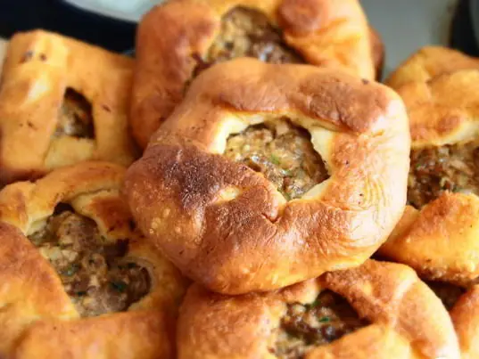

Фото: Йоля @ nyam.ru ; cropped by Off-shell, CC BY 3.0

Беляши (перемячи)
Жареные пирожки из дрожжевого теста с мясной начинкой и отверстием сверху
120 мин7 порц.605 ккал на порциюБ 22 · Ж 32 · У 57Татарская кухня
Продукты на 7 порц.
- Мука пшеничная3 стак.
- Молоко250 мл
- Дрожжи сухие1 пакетик
- Сахар2 ч. л.
- Соль2 ч. л.
- Растительное масло110 мл
- Говяжий фарш500 г
- Лук репчатый3 шт
- Вода3 ст. л.
- Перец чёрный молотый0,5 ч. л.
Как готовить
- Растворите дрожжи и сахар в тёплом молоке, оставьте на 10 минут. Добавьте 1 ч. л. соли, 2 ст. л. масла и муку, замесите мягкое тесто. Оставьте в тепле на 1 час.
- Лук натрите или мелко порубите, смешайте с фаршем, солью, перцем и холодной водой.
- Разделите тесто на 14 частей, каждую расплющите в лепёшку 10 см.
- Положите в центр 1 ст. л. начинки, соберите края к центру складками, оставив сверху отверстие 1-2 см, и слегка расплющите.
- Налейте в сковороду масла слоем 1 см и разогрейте на среднем огне.
- Жарьте беляши сначала отверстием вниз 4-5 минут, до золотистой корочки, затем переверните и жарьте ещё 4-5 минут.
- Выкладывайте на бумажное полотенце. Начинка готова, когда сок в отверстии прозрачный.
Совет. Первой жарьте сторону с отверстием, так начинка запечатается и сок останется внутри. Впитывается около 80 г масла, это учтено в составе.